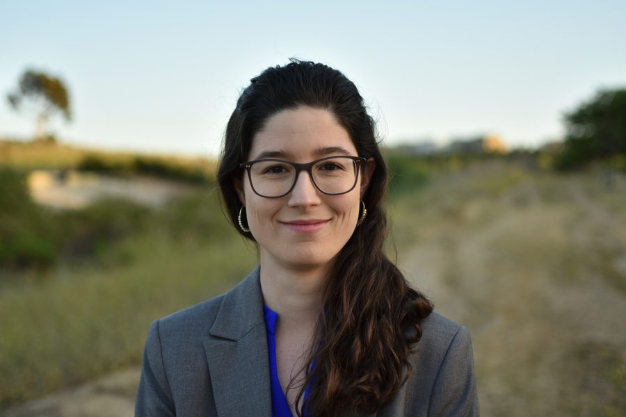

Irene Martínez
I am an Assistant Professor in the Transport & Planning Department. My research focuses on the design and modelling of sustainable transport systems, focusing on efficiency and equity.
My research interests lie at the intersection of transport equity and emerging technologies, with the goal of ensuring that innovation contributes to closing — not widening — existing social gaps. With expertise in traffic flow theory and control, I develop traffic models and management strategies that leverage current and future technologies to reduce congestion and inequalities, and improve transport sustainability.
I aim to develop holistic, efficient, multi-modal transport models that integrate traffic flow dynamics, public transport, and shared mobility systems, ensuring that mobility solutions benefit all users. My work spans various aspects of traffic management, including the design of Variable Speed Limits, High-Occupancy-Toll lanes, and fleet sizing for shared mobility systems.
News
- Sep 2026 TU Delft researchers will host a workshop at ITSC in Napoli on Autonomous Vehicles and Shared Mobility: Driving the Next Evolution of Intelligent Transportation.
- Sep 2026 Jiayi, Géraldine, and Sherman will present their recent work at hEART 2026 in Paris!
- Jul 2026 Awarded an NWO ENW-XS grant for a new project, “Testing the limits of topology as the sole predictor of transferable travel demand”. I’m looking for a short-term researcher to contribute — get in touch if this interests you. Read more →
- Jul 2026 New journal paper: “Monotone three-dimensional surfaces and equivalent formulations of the generalized bathtub model” (with W-L. Jin), Transportation Research Part B. DOI →
- May 2026 New paper submitted: “An Empirical Model of Driver Workload Dynamics at Unsignalized Intersections” (with Yiyun Wang, Wouter Schakel and colleagues at TU Delft and VTI Sweden), currently under review. Read the preprint →
- Mar 2026 New paper submitted: “Can traffic congestion be managed without compromising social equity?” (with PhD candidate Zamzam Al-Rawahi and Simeon C. Calvert), currently under review. Read the preprint →
- Mar 2026 DeepTraffic project announced — a new generation of traffic-prediction methods embedding traffic flow theory into machine learning (NWO Open Technology Programme, with Hans van Lint & Serge Hoogendoorn). Read more →
- Feb 2026 UrbanMOVES kick-off meeting.
- Fall 2025 Hosted Géraldine Viel (Univ. Gustave Eiffel Lyon) for a three-month research visit.
- Jul 2025 Awarded an NWO Veni grant for UrbanMOVES; featured in TU Delft’s “Five Veni grants for CEG researchers”. Read more →
(Old news)
Service & Committees
- Member, Board of Studies, MSc Transport, Infrastructure and Logistics (TIL)
- Member, IEEE ITSS Technical Committee on Automated Mobility in Mixed Traffic
- Member, TRB Traffic Flow Theory and Characteristics Standing Committee (2022–2025) — co-organised the 2023 Summer Meeting at the AMS Institute, Amsterdam
Before joining TU Delft…
Education
- PhD Civil & Environmental Engineering (2022) — University of California, Irvine
Dissertation: “Modeling and Management of Emerging Mobility Systems: New Approaches Based on Vehicle and Trip Flow Dynamics in Absolute and Relative Spaces”
The conference papers presented during this period (2018–2022) are C4 - C15. - MSc Transportation Systems Engineering (2019) — University of California, Irvine
Conference paper: C3 - BSc and MSc Civil Engineering (2017) — UPC BarcelonaTech
Conference papers: C1 and C2
Industry Experience
- Structural Engineer internship, ESTEYCO S.A.P. (Barcelona) — 02/2016 – 12/2016
- Structural Engineer, Dr. Lüchinger + Meyer Bauingenieure AG (Zürich) — 09/2014 – 02/2015